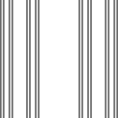

| Now consider a fractal that is a Cantor set in the x-direction and a line segment in the
y-direction. |
| This type of construction is called the product of
the Cantor set and the line segment. |
|  |
| To compute the box-counting dimension of this fractal, cover it
with smaller and smaller boxes, keeping in mind that we take the boxes to be
squares. |
| Square isn't essential. The important point is that the
diameter
of the shapes goes to 0. |
| For example, covering this fractal with
increasingly thin rectangles, all of height 1, does not capture the scaling
of the fractal.) |
|